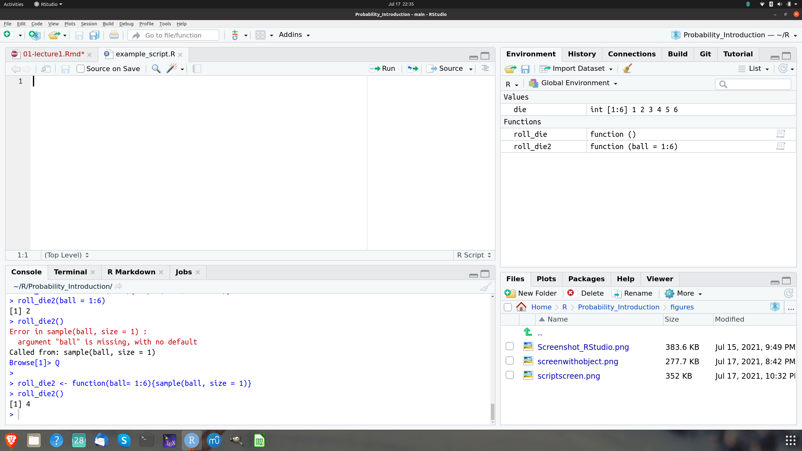
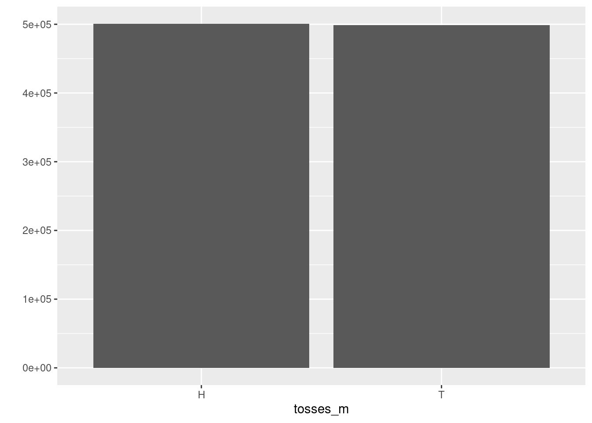

Chapter 2 Empirical background and some terminology
If you chose to study Finance it should be natural for you to study probability. After all, Finance studies the allocation and pricing of money across time. You can safe money to use it later for purchasing goods and services you can borrow money to invest today and repay in the future from the revenues of your project. But the future is uncertain and we do not know today how it will look like. In Finance we unavoidably have to deal with risk and uncertainty. The most fundamental concept we have available to deal with risk and uncertainty and to think about and analyze it is probability. Therefore every serious student of Finance has to study probability early on.
2.1 Terminology
Probability is a mathematical theory. This theory gets practical value and intuitive meaning in connection with real or conceptual experiments such as selecting a random sample of stocks and observing their most extreme price drop over a given period of time or observing the frequency of loan defaults. In the early days of probability when some conceptual ideas about which we are going to learn in this course were first developed the conceptual experiments considered by the pioneers of probability where games of chance involving rolls of dies, or spins of a wheel as well as reflections on placing bets on the outcomes of such games. While we will stick mainly to our main context - computational finance - some of these chance games are so intuitive and insightful that we will occasionally in the beginning of the course also use some of them for illustrating concepts and playing with them.
All of the examples and descriptions given above are, however, rather vague. We have to be more precise what we mean by an experiment or observation.
When we use the term (random) experiment we mean a process leading to an uncertain outcome. To make this notion precise and useful we need to agree what we mean by uncertain outcomes.
Take the simple example of considering whether the price of a stock is going to rise or fall at the next day. In a practical situations the outcome of a move in the stock price can be that it goes up or down but it could in principle also stay the same. Still when we think about the experiment of observing the stock price tomorrow in many applications in Finance we usually agree on the outset that up and down are the only possible outcomes of this experiment. By such an agreement we have pinned down the possible outcomes.
The collection of all possible outcomes of an experiment is called the sample space. While the sample space of the experiment of observing tomorrow’s stock price is an idealization it is exactly this idealization which simplifies the theory without affecting its applicability.
Idealizations of this kind are standard in probability. It is - for example - impossible to know how high the price of a stock might become. Is there a maximal price beyond which the price can not possibly hike? Many of us would hesitate to claim that the price might rise without bound. Yet many models in applied Finance are based on such an assumption. The models allow arbitrary price hikes but with arbitrary small probability as the price gets higher and higher. Practically it does not make sense to believe that a security price can become arbitrarily high. The use of arbitrarily small probabilities in a financial model might seem absurd but it does no practical harm and makes the model simple and convenient to use. Moreover, if we seriously introduced an upper bound on a security price at \(x\) it would be also awkward to assume that it is impossible that it could be just a cent higher, an assumption equally unappealing than assuming it can get in principle arbitrarily high.
When we talk of a basic outcome we mean the possible outcome of a random experiment. An event is a subset of basic outcomes. Any event which consists of a single outcome in the sample space is called a simple event.
Probability is a measure of how likely an event of an experiment is. Thus when we talk about probability in a precise and meaningful sense we can only do so in relation to a given sample space or to a certain conceptual experiment.
Thus before we can begin to seriously talk about probability we need to develop a good understanding of experiments, sample spaces, basic outcomes and events. In the spirit of this course we will develop this understanding by building these concepts using R. Thus let us develop examples of random experiments, sample spaces, basic outcomes and events in parallel with making our first steps in R. R will be our tool which will allow us to “touch” probability concepts.
As we proceed through our course we will develop a broader and deeper understanding of this language together with the probability concepts.
2.2 Rolling a die: Constructing a random experiment, a sample space and events using R
Lets start with a classic and old example of a probability model: Rolling a six sided die. The rolling of the die is one of the non-finance examples we mentioned before. It is so useful that we will come back to it once in a while in the beginning of the course. Here its usefulness is enhanced because it allows us in an easy way to quickly learn some powerful R concepts and techniques. We want to roll this die not physically but on our computer using R and RStudio as our tool. How can we do this?
2.2.1 The R User Interface
Before we can ask our tool to do anything for us, we need to know how to talk to it. In our case RStudio allows us to talk to our computer. It works like any other application. When you launch RStudio on your computer, you will see a screen looking like this:

Figure 2.1: The RStudio startup screen
In this picture you see a screenshot of my RStudio screen. Interacting with the app is easy. You
type commands via your keyboard at the prompt, which is the > symbol. You can see it in
the left pane in the screenshot. You send the command to the computer
by pressing enter. After you have pressed enter, RStudio
sends the command to R and displays the result of your command with
a new prompt to enter new commands, like this:
> 1 + 1
[1] 2
>The [1] means that the line begins with the first value of your result. For
example, if you enter the command 20:60 which means in the R language, “list
all the integers from 20 to 60,” and you then press return, you will get an output like this:
[1] 20 21 22 23 24 25 26 27 28 29 30 31 32 33 34 35 36 37 38 39 40 41 42 43 44 45 46 47 48 49 50 51 52
[34] 53 54 55 56 57 58 59 60meaning that 20 is the first value displayed in your result. Then there is a
line break because not
all values can be displayed on the same line and R tells you that 53 is the
34-th value of the
result.
The colon operator : is a very useful function in R which we will often need. It allows us
to create sequences of every integer between two given integers.
R needs a complete command to be able to execute it, when the return key is pressed.
If a command is incomplete,
like for instance
5*,
where we enter 5, the multiplication operator but no
second factor to multiply 5 with R will show:
> 5*
+ The + sign means that R needs more input to complete the expression.
So if we type the missing
factor after the + prompt, say 4 and then press the return key again, we
will get the result
> 5*
+ 4
[1] 20
If you type a command that R does not understand, you will be returned an error message. Don’t worry if you see an error message. It just is a way the computer tells you that he does not understand what you want him to do.
For instance, if you type 5%3 you will get an error message like this
> 5%3
Error: unexpected input in "5%3"
>Sometimes it is obvious why a mistake occurred. In this case, that R just does not
know what to do with
the symbol %. It has no meaning in this context. Sometimes it is
not so obvious what the error
message actually means and what you might do about it. A useful strategy in this
case is to type
the error message into a search engine and see what you can find. The chance is very
high that others
encountered the same problem before you and got helpful advice how to fix it from other users on
the internet. One site, we find particularly helpful for all kinds of questions related to R
and R programming is https://stackoverflow.com/. Try it at the next opportunity.
Now with this basic knowledge, we can already make the first step to create a
die on the computer
using R. If you think of a physical die, the essential thing that matters are
the points on its
six sides. If you throw the dice it will usually land on one of these sides
and the side which is
on the upper side of the die shows the number of points.
The colon operator : gives us a way to
create a group of numbers from 1 to 6. R gives us the result as a
one dimensional set of numbers.
> 1:6
[1] 1 2 3 4 5 6
> Lets use these first steps in R to recap the probability concepts we have learned using this
example of the six sided die:
A basic outcome of rolling a six-sided die is for example 6 if the upper side after
rolling the die happens
to be the side with 6 points. The sample space of the experiment of rolling a six-sided die is
the set \({\cal S} = \{1,2,3,4,5,6\}\). In probability theory we often use the symbol \({\cal S}\) or
\(S\) for sample space. In many probability texts the sample space is also often denoted by
the symbol \(\Omega\) the greek letter for (big) Omega. A random experiment in this example is
the rolling of the die. The outcome is uncertain but once the die is rolled the outcome
can be determined precisely. Finally we can also illustrate in the example the concept of an
event: For example, the event, that the die will show less than 4 points is \(A = \{1,2,3\}\). We use here
the symbol \(A\) to denote this event and use set notation to describe the set of basic outcomes that
make up the event “number of points smaller than 4.” The event that the outcome is that the point
shows 10 points is the empty set \(B = \emptyset\). The symbol \(\emptyset\) comes from set theory and
means the set containing no elements. This event can contain no elements because we can not get
a score of 10 by rolling a six sided die.
2.3 Objects
You can save data in R by storing them in objects. An object is a name, you can choose yourself to
store data. For example, if you choose to store the value 6 in an object called point_six,
you would type:
> point_six <- 6
> at the prompt. R will the store the value 6 in the object called point_six, which
you can use to refer to the value. If you type the name of your object at the prompt, R
will distplay the value you have assigned. A usful key combination for typing the assignment
operator <- is to use the key combination ALT _. At the R prompt R will automatically
print an assignment operator.
> point_six
[1] 6
> Now you can use the name of the object to refer to its value. For instance, you could divide
point_sixby 2and get a meaningful result
> point_six/2
[1] 3
> Now to make our die more tangible and useful, let us store it in an R object by
typing the following command at the prompt. This command creates an object with name
die and assign the vector 1,2,3,4,5, 6 to it.
> die <- 1:6
>

Figure 2.2: The RStudio Environment pane keeps track of the objects you have created
You can now see in the right upper Environment pane that R shows you that there is an object with the
name die that it consists of integers 1,2,3,4,5. As you create more objects they will be
stored in the Environment pane and are ready for your reference, unless you delete them. You can remove or delete an object by typing
> rm(object)
>
or by assigning the value die <- NULL which would also remove the object from your
environment or workspace.
You can name your objects almost anything with a few exceptions. An object name must not start with
a number. There are some special symbols which can also not be used in object names, like
^, !, $, @, +, -, /, *. Note that R is case sensitive and distinguishes small and big
letters. If you assign a new value for an object you have already created, R will overwrite the
object without warning.
You can see which objects are currently created and available for you in the Environment pane
of your session of by typing ls().
Before we learn how we can actually roll our die and perform a random experiment with it, let us briefly use the opportunity to explain a few things about how R does computations. We have already explained that we can use the object name to refer to the value. So for instance if we type
> die*die
[1] 1 4 9 16 25 36
> This might irritate some of you because we have called the object a vector. In linear
algebra multiplication of vectors is only allowed if there is an inner product. What happens
here, if we use * the multiplication operator is that R does an element-wise multiplication
of the six numbers of our die. Of course R allows to take an inner product as well, but this needs
a different operator. To compute an inner product, we would type
> die %*% die
[,1]
[1,] 91Now R displays the result as a vectors with one row and one column, which is denoted in the output by
[ , 1] for the column and [1, ] for the row. We will learn later more about
the use and the meaning of this notation in R.
The elementwise execution R usually uses also means that when you, for example type
> die - 1
[1] 0 1 2 3 4 5
>
R would subtract 1 from every component in the vector die.
Another specific behavior of R, you need to know about is called “recycling.” If you give R two vectors of different length in an operation, R will repeat the shorter vector as long as it is of equal length with the longer one. For example, if you have:
> die + 1:2
[1] 2 4 4 6 6 8
> you see that R adds 1 to 1 and 2 to 2 and then starts over again by adding 1 to 3 and 2 to 4 and then starts over once again by adding 1 to 5 and 2 to 6. If the longer vectors is not a multiple of the shorter one, R recycles but the cuts off. It will give you a warning though.
> die + 1:4
[1] 2 4 6 8 6 8
Warning message:
In die + 1:4 :
longer object length is not a multiple of shorter object length
>
While this might seem awkward to some of you, we will see that for data manipulation element-wise execution is often extremely useful. It allows to manipulate groups of values in a systematic way.
2.4 Functions
R contains many functions which we can use to manipulate data and compute things. The syntax for
using a function is very simple: You type the function name and put the value of the function
argument in parentheses. Here we use for illustrations the function of the square root sqrt()
and the function for rounding a number round().
> sqrt(4)
[1] 2
> round(3.1415)
[1] 3
>
The data you write in the parentheses are called the fuction arguments. Arguments can be all sorts of things: raw data, R objects, results from other functions. If functions are nested, R evaluates the innermost function first and then goes on to the outer functions. To see examples of all these instances you can take
> mean(1:6)
[1] 3.5
> mean(die)
[1] 3.5
> round(mean(die))
[1] 4
> for example.
For simulating random experiments, R has the function sample(). With this function
we can roll our die on the computer and conduct actual random experiments. The function takes
as arguments a vector names x and a number named size. sample will return
size elements randomly chosen from the vector x. Lets say:
> sample(x = 1:4, size = 2)
[1] 4 1
>
In this case sample has chosen 4,1 from the vector x = (1,2,3,4). If we want
to roll the die in our computer we can thus pass the die as an argument to sample and
use the number 1 for the size argument. Lets do a few rolls with our die
> sample(x = die, size = 1)
[1] 3
> sample(x = die, size = 1)
[1] 2
> sample(x = die, size = 1)
[1] 3
> sample(x = die, size = 1)
[1] 5
> sample(x = die, size = 1)
[1] 1
> sample(x = die, size = 1)
[1] 5
>
R functions can have many arguments, but they need to be separated by a comma.
Every argument in every function has a name. We specify which data are assigned to the arguments by setting the name equal to the data. Names help us to avaoid passing the wrong data and thereby mixing up things or committing errors. But using names is not necessary. If we just wrote
> sample(die, 1)
[1] 5
> R would also know what to do. It is not always clear which names to use for a function. If you are
not sure, you can use the function args to look it up. Here we take the
function round as one example.
> args(round)
function (x, digits = 0)
NULL
> Note that the digits argument in the round function is already set to 0. Frequently
R functions come with optional arguments. These arguments are optional because the come with a
default value, which is 0 in case of the round function.
We recommend that you write out argument names as a rule. It gives clearer code and avoids errors. If you don’t write argument names, R matches your values to the arguments of the function by order.
2.5 Writing your own functions
Now we are ready to write our own function to roll the die in our computer. Each function in R has the same elements: A name, a function body of code and a set of arguments. To write your own function, you have to write up all of these parts and save them in an R object. The syntax is:
my_function <- function() {}
The name here is my_function, next comes the expression function() which needs to be assigned.
The names of the function arguments have to be written between the parentheses. Then we
have to write the actual code within the braces {}.
To do this for the die, lets write a function names roll_die.
> roll_die <- function(){die <- 1:6
sample(die, size = 1)}Now we can roll our die for a few times to show how the function works
> roll_die()
[1] 4
> roll_die()
[1] 1
> roll_die()
[1] 5
> roll_die()
[1] 4
> roll_die()
[1] 6
>
A final remark in the samplefunction is in place here. If we look at the argunments of
sample using the args function we see
> args(sample)
function (x, size, replace = FALSE, prob = NULL)
NULL
> Lets do not discuss all the details of this output but concentrate for a moment on the replace
argument. What does this mean? As we saw previously we can use the sample function to
model the rolling of our die. If we set the size argument to 1 we get the roll of one
die. If we set the size argument to n, we would simulate the rolling of n dies.
But now the replace argument becomes crucial. As we can see in the output of the
args function replace has a default value FALSE. This is a logical argument.
It tells R, for example, that if we set size = 2, meaning that two dice are rolled, if the
first dice shows, say a value of 3, the second die cannot show 3 as well. This is clearly not
what we have in mind when we model the rolling of 2 dice. It should be possible that
both dies show the same value. To enable this behavior of the sample function, we have to
change the default value of the replace argument to TRUE. Then R chooses a random draw
from all of the six possible values for all dice rolled.
Congratulations. You have written your first R function for conducting a simple random experiment. Think of the parentheses as a trigger that tells R to run the function. If you omit the trigger R just prints the body of the function. When you run a function, all the code in the function body is executed and R returns the result of the last line of code. If the last line of code does not return a value neither will R.
2.6 Arguments
Imagine we remove the first line of code in our function body and changed the name die in the sample function to ball.
roll_die2 <- function(){sample(ball, size = 1)}If we call the function now, we will get an error
> roll_die2()
Error in sample(ball, size = 1) : object 'ball' not foundWe could supply ball when we call roll_die2 if we make ball an argument of the
function. Lets do this:
> roll_die2 <- function(ball){sample(ball, size = 1)}
> Now the function will work as long as we supply ball when we call the function.
> roll_die2(ball = 1:6)
[1] 2
> Note that we still get an error, if we forget to supply ball argument
> roll_die2()
Error in sample(ball, size = 1) :
argument "ball" is missing, with no defaultThis could be avoided if we give the function a default argument
> roll_die2 <- function(ball= 1:6){sample(ball, size = 1)}
> roll_die2()
[1] 4
> 2.7 Scripts
So far we have worked by interacting with the console. But what if you want to edit your functions? It would be much easier, if you could use a draft of your code and work form there. This can be done by using a script.
You create a script by going to File > New File > R script in the menu bar of RStudio. Using
scripts is the standard way to write code in R. It not only helps you to keep track of your code,
save it and edit it later. It also makes your work reproducible. You can edit and proofread your
code and share it with others. To save your script go to File > Save As in the
menu bar.

Figure 2.3: The RStudio Script
RStudio has many useful features to help you work with scripts. You can for instance automatically execute a line in a code by using the run button. You can also execute sections of code or the entire script. The entire script is executed by running the Source button. For all these commands there are key short cuts which you will learn as you work more with RStudio and R.
2.8 Using packages and finding Help
We have now a function which we can use to simulate the rolling of a die, roll_die(). If the
die is fair it should be the case that if we roll the die often, all numbers should occur
about equally often. The die should not be weighted in favor of a particular value.
One way to learn whether our die is fair are repetition and visualization. These are tools we will need all the time, when working with data and when doing probability. While R has many useful functions, one of the great powers is that R is constantly extended by a huge community of users by providing packages. Packages are add on functions, which will not be available when you install R. They need to be installed and loaded before you can use them. Since packages are such a powerful tool in R we need to introduce what they are and how to use them in the beginning.
2.8.1 Packages
There are many visualization tools in R that come with the basic installation. Since the point
we want to make here is about packages, we will use a visualization function which is part of
the package ggplot2, a very popular package for making all kinds of graphs. There are
many additional functions provided with this package. For the point we want to make here
we will use one of them, called qplot.
Since qplot is a function in the package ggplot2, we first need to install this package.
To install a package you need to be connected to the internet. If you have internet connection
go to the command line and run at the command line
> install.packages("ggplot2")
R will now download the package via the internet and install it. It will display various messages
in the console during this process. Don’t worry if you don not know what they exactly mean and don’t
panic that they are displayed in red. All packages can be installed like this. You have just to enter the
correct name in the function install.packages(). The lower left pane in the RStudio software
alternatively provides a tab called Packages. Using this tab, you can also install R packages
interactively by clicking the install button on the upper left corner of the Packages tab.
After installation the package is on our hard-drive but it can not yet be used. To use the package it has
to be laoded. This is done with the command library. To load the ggplot2 package we type
> library("ggplot2")
and hit the return key. Many things could be said about the R package system and you will learn it in more detail as we go along in our course. For the moment the most important thing to remember now is that a package needs to be newly loaded whenever you want to use it in a new R session.
To check whether our dies is fair, we need to roll it many times. R provides a function, that does this
for us. This function is called replicate and provides an easy way to repeat a command many times.
The number of times we want to repeat something is given as an argument to the replicate function.
Now lets roll our die 100 times and save the result in an object we call rolls:
rolls <-replicate(100, roll_die())We now use the ``plot``` function from the ggplot2 library to make a quick visualization.

Figure 2.4: Frequencies of 1, 2, 3, 4, 5, 6 after rolling our virtual die 100 times
It looks like every value occcured roughly 16 times but there is still quite some variation. For instance, the value 3 seems to occur more than 20 times whereas the value 2 occurs less than 15 times. Maybe we have to give it another trial with more replications. With the computer we can do this with a fingertip. Let us roll our die 10000 times and plot the result.
> rolls2 <- replicate(10000, roll_die())
> qplot(rolls2m bindwidth = 1)
Now the picture looks better.

Figure 2.5: Frequencies of 1, 2, 3, 4, 5, 6 after rolling our virtual die 10000 times
It seems that there is no significant visual evidence that our die is loaded.
2.8.2 Getting Help
We have now learned a tiny number of R functions and we have written one function ourselves. We have learned how to make use of functions provided by packages. It would be overwhelming to memorize and learn them all. In R, fortunately, every functions comes with a detailed documentation and with its own help page. You need to learn how to use this source right from the beginning.
To access the help page of a function you type the function name preceeded by a questionmark at the prompt, like this
> ?sample
Then, after you have pressed the return key, a help page is opened in the right lower pane under the
help tab. This help page has a particular structure that you will find for every other R function
no matter whether it is provided by the base installation or by a package. In the upper left
corner you see the name of the function (sample) and in curly brackets next to it the term
base, which means that this is a function in the R base installation. Then you see a headline
about what the function does.
From the top of the page, you then first see the field Description. This is a short description what the function does. Here it says
Description
sample takes a sample of the specified size from the elements of x using either with or without replacement.The next field is Usage. It gives you the function description with the arguments. Here for example
Usage
sample(x, size, replace = FALSE, prob = NULL)
sample.int(n, size = n, replace = FALSE, prob = NULL,
useHash = (!replace && is.null(prob) && size <= n/2 && n > 1e7))
The first line in Usage should by now be familiar. Don’t worry about the second line. The function can obviously do more than we know so far.
Next comes a list of arguments the function takes and what type of information R expects you to provide, as well as what R will do with this information. Here it says for example
Arguments
x
either a vector of one or more elements from which to choose, or a positive integer. See ‘Details.’
n
a positive number, the number of items to choose from. See ‘Details.’
size
a non-negative integer giving the number of items to choose.
replace
should sampling be with replacement?
prob
a vector of probability weights for obtaining the elements of the vector being sampled.
...
We omit some information here.
Then comes a field called Details which gives a more in-depth description of the function. The next field is calles Value. It describes what the function returns when you run it. Then we have a referecne to related R functions under the field See. Finally there is a field called Examples. This field contains example code that is guaranteed to work. It shows a couple of different cases how you can use the function in practice.
2.9 Some more examples
To close this lecture let us come back to probability and discuss some more examples of random experiments, sample spaces, basic outcomes and events. Let us try to leverage our R knowledge to build the objects in the different examples ourselves.
2.9.1 The stock price of Apple
Since the context of this course is Computational Finance, let us discuss an example from
Finance first: The
stock price of Apple is recorded daily. Let us use this example to make a first step in
loading data into R. We have already learned how we could have a first quick glance at
how they look like. We will discuss various ways to get financial data as we go along. For this
initial example we have prepared a data file for the Apple stock price from January 2021 to
the beginning of September 2021 and we have stored the data (in some format) locally. In
practice we often will not have data ready fro retrieval but will have to retrieve them from the
web, from a database or from other sources but let us not worry about these practical details
for the moment. We have stored the data in an R internal format, called RDS and we have stored the
file apple_stock_prices.RDS in a folder in our current working directory which we have
called data. Under this assumption we read these data and assign them to an R object
using the R function readRDS. Let us call
this object apple_stock:
apple_stock <- readRDS("data/apple_stock_price.RDS")To have a first look at the data, we use the R-function head(). This is a very useful function
to glance at the data because instead of shwoing us the entire, possibly very big, dataset it
shows us just the first few lines. We can even specify how many by specifying a parameter
for the number of lines we want to display, say 10:
head(apple_stock, n = 10)## symbol date open high low close volume adjusted
## 1 AAPL 2021-01-04 133.52 133.61 126.76 129.41 143301900 128.8048
## 2 AAPL 2021-01-05 128.89 131.74 128.43 131.01 97664900 130.3973
## 3 AAPL 2021-01-06 127.72 131.05 126.38 126.60 155088000 126.0080
## 4 AAPL 2021-01-07 128.36 131.63 127.86 130.92 109578200 130.3078
## 5 AAPL 2021-01-08 132.43 132.63 130.23 132.05 105158200 131.4325
## 6 AAPL 2021-01-11 129.19 130.17 128.50 128.98 100384500 128.3768
## 7 AAPL 2021-01-12 128.50 129.69 126.86 128.80 91951100 128.1977
## 8 AAPL 2021-01-13 128.76 131.45 128.49 130.89 88636800 130.2779
## 9 AAPL 2021-01-14 130.80 131.00 128.76 128.91 90221800 128.3072
## 10 AAPL 2021-01-15 128.78 130.22 127.00 127.14 111598500 126.5454Now we see what is contained in the data. They are organized in a table. Each column is a variable, starting with the stock symbol of Apple, then the date, the opening price, the highest, the lowest and the closing price, the volume and the adjusted volume. Every row is a record of the values of these variables for a particular trading day in the time period we consider.
Now let us make a chart of the closing price at each day over the time period of our data using
the plotting function qplot() we already used for visualizing the outcomes of
repeated die rolls. In order to do so, we create two new R objects which contain the date
and the column close. This means we need to select these two columns.
We will learn more systematically how to do this in R. For the moment we just show one way to achieve this for the particular example:
date <- apple_stock$date
price <- apple_stock$closeNow we load the library ggplot2 and use the qplot function. As arguments we give the
qplot function the series of dates and the series of closing prices and set a display
option, called geom to “line” to get a line graph (instead of the qplot default of a point
graph)
library("ggplot2")
qplot(date,price, geom = "line")
Now assume we are at the end of our price data series, at August 6th 2021. We want to think about the uncertain price tomorrow. This is our random exmeriment. What would be a suitable state space?
What are the possible prices Apple can attain? The minimum price is zero. The maximum price can not be determined. In principle it could be infinite. The state space here would be an open interval of real numbers, \({\cal S} = [0, \infty)]\). Quite complicated.
We could define the state space for the price change, in another way, by thinking about three events: Up, denoted by \(u\) when the stock price increases, Even, denoted \(e\) when the stock price does not move, and Down, denoted \(d\) when the price decreases. From this perspective the state space would be \({\cal S} = \{u,e,d\}\). A bit simpler than before.
There are more elegant and powerful ways to read and plot data in R. We used this particular example just to show you one particular way. More details and more general insights how to do this we will develop as we go along.
2.9.2 The change of a stock price two days from now
Suppose we want to study the random experiment of observing a stock price move twice. This is a random experiment because whether the coin will go up (U) or down (D) is uncertain before we make the observation, but once the closing price is published, the outcomes are clear. The sample space is \({\cal S}=\{UU, UD, DU, DD \}\). The event that the closing price at the end of the first trading day will be higher is \(A = \{UU, UD\}\). The event that the stock price does not decrease is \(B = \{UU\}\), which is also a basic outcome of the random experiment.
While this example is so simple that we do not need a computer, let us take the opportunity to introduce a new R function, which computes all possible combinations of objects. Let us first create a virtual price move by listing the possible moves at day 1 and day 2.
day_1 <- c("U", "D")
day_2 <- c("U", "D")There are some new things here. Let us explain. First, while we used gray boxes to show you input and output of code as it would appear if you interact on the console we use here a very convenient feature in RStudio, which we will use from now on.
We compose these lecture notes in a document
format, which allows the mixing of text and code. Whenever we write a piece of R code, it is shown
in a gray box, as before but without the > prompt. When you move the cursor
on the gray box
now, you will see a copy icon in the upper right
corner of the box. This will allow you to copy this
code snippet and use it in another document or on your console to execute it.
The second new thing is that we have used a new data type, which we will
need very often: characters.
Characters can be used to form strings and R has many powerful functions to work with and operate
on strings. We will see many examples of this later.
Strings are always between " ", like this. Like
numbers, strings can be stored in objects and referred to later. But what we need here is actually
two strings in one vector. This is achieved by using the c() function of R.
c stands for concatenation
and here it stores both basic outcomes of a price move in two single vectors day_1 and day_2.
We can now pass these two virtual oves to the R function expand.grid().
This function will produce
the sample space of two price moves by computing all possible combinations of sequences of U and D
that can occur at the end of two trading days.
expand.grid(day_1, day_2)## Var1 Var2
## 1 U U
## 2 D U
## 3 U D
## 4 D DDon’t worry at the moment if you do not understand what the output
format is and why the columns are
headed by Var1 and Var2 followed by the symbols <fctr>. We will come back to this.
Before we look at yet another sample, let us mention that this setup, simple as it may seem, plays a very important role in the theory of random price fluctuations of asset prices and in option pricing and we will encounter it later in more detail.
2.9.3 Birthdays and the Blockchain
Suppose we are interested in the probability that at least two students in a class of size \(n\) share the same birthday. This is a very famous probability problem which is often referred to as the birthday paradox. It is technically not really a paradox but it is called like this because this probability behaves in a surprising way if viewed as a function of the class size \(n\). We discuss the problem in the context of computational finance because it has also an important application in the design of crypto-currencies and the new field of decentralized Finance, which make heavy use of cryptographic methods.
We will talk about actual probabilities in the next lecture. But in this lecture we have learned that we can only talk meaningfully about probabilities if we know the random experiment and the basic outcomes. One interesting aspect with respect to the concepts of basic outcomes and sample space is that the birthday paradox example is an instance where we cannot simply write down the sample space like in the example of rolling a die.
The event we are interested in is that at least two students in a randomly selected sample of \(n\) out of class have the same birthday. It turns out that it is easier to think about the complementary event, which is that all students have different birthdays.
In terms of possible basic outcomes there are \(365^n\) possible outcomes if there are \(n\) students in the class. Each of them can have a birthday at any of the 365 days in the year and in total there are \(n\) students.
So the sample space \({\cal S}\) for the conceptual random experiment that all \(n\) randomly selected students have different birthdays is the set \({\cal S} =\{1,2,\ldots, 356^n\}\) of basic outcomes. For 10 students this would be
365^10## [1] 4.1969e+25basic outcomes for all \(n\) students having different birthdays.
The birthday problem also plays an important role in cryptography, and its concept of hash-functions. Hash-functions play a key role in the implementation of Cryptocurrencies. Let us explain this context and what it has to do with Crypto:
A hash-function maps a string of arbitrary but finite length to a fixed length string of output. A very frequently used hash-function in practice is the function SHA-256, which maps its input to a string of 256 bits1. So, you could for instance give the text of the bible as an input to SHA-256 and it would map this into a 256-bit string, which functions like a finger print of this text. This is a so called one-way-function meaning that it is easy to evaluate or compute but it is practically impossible to learn from the value the initial argument by computing the inverse.
Hash-Functions are key pillars of modern cryptography, where they play a major role in message authentication. This is because it is impossible to modify the input without significantly changing the output. So in our previous example, if you only dropped one letter from the text of the bible it would hash into a completely different value than the previous version which still contained this letter and you would immediately see from comparing the hash-values that something has changed.
The collision problem for hash-functions is formally equivalent to the birthday problem. The event we are interested in is that at least two input strings hash-to the same value. Again it is easier to think about the complementary event that all inputs hash to a different value.
If the range of the hash-function is \(M\) and the hash-function maps into a 256 bit string then there are \(2^{256}\) basic outcomes. Since the hash-function maps a large string onto a smaller string it is possible that there are two different strings \(x \neq y\) mapping to the same value \(\text{hash}(x)=\text{hash}(y)\). This would be a problem for message authentification because it would give the same “fingerprint” for two different strings. For a cryptographically secure hash function it is therefore required that the probability of such a collision should be small enough to exclude a collision in all practically relevant circumstances. We will take up the eexample again in the next lecture.
2.10 Summary
These are the basic probability concepts we have covered in this lecture:
- A random experiment: A process leading to an uncertain outcome.
- State space: The collection of all possible outcomes of a random experiment.
- Basic outcome: A possible outcome of a random experiment.
- Event: An event is a subset of basic outcomes. Any event which contains a single outcome is called a simple event.
These are the R concepts we have covered in this lecture:
- objects arbitrary names that can store different values and data types.
- functions ab R object that can accept other R objects as arguments, operate on them and return a new object.
- scripts files that store sequences of R commands and can be saved, repopened and allow the execution of commands.
- using packages
- finding help
2.11 Project 1: Rolling two dice and adding the points
Here we formulate a project where you can apply the concepts we have learned in this lecture.
In this project we ask you to write an R function that virtually throws two dice and
adds up the number of points shown by the dice. Using this function do a simulation of this
random experiment. Install and load the ggplot2 package to make a plot using the qplot function to
visualize the behavior of our dice. Are the dice fair?
A bit, short for binary digit, is defined as the most basic unit of data in telecommunications and computing. Each bit is represented by either a 1 or a 0↩︎